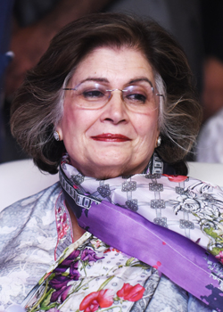

BACKGROUND AND HISTORY
UNITED EDUCATORS OVERVIEW
Established in Karachi in 1988, The United educators is today one of the largest private school networks across the globe. Having more than 2500 students we continue to expand our reach in different locations of Karachi to meet the demands for quality education as well as to ensure a strong global presence. The knowledge and skills-based curriculum derived from the national curriculum guides students from Nursery to Matriculation, qualifying them for the Board and O and A levels examinations.
CURRICULUM & ACADEMIC PHILOSOPHY
Pass out students from United Educators secure positions in top colleges and universities worldwide. Our students, according to Cambridge Assessment International Examinations annual results analysis, are amongst the highest achievers in their city, their country and, in some cases, in the world. The curriculum encourages a student-centered approach where learners have an active role in their learning process and develop the skills and ability to make a significant contribution to society. Its particular strength lies in the integration of digital media and ICTs in an array of learning programmes.
FOUNDERS OF UNITED EDUCATORS
Mrs Nasreen Munawar Kasuri has played a vital role in women’s empowerment in the country. Sixty-two percent of UE employees are women, with a very high percentage in upper management. Mrs Kasuri is the Chairperson of United Educators which she founded in 1988. Actively involved in a number of non-profit and charity organisations, she received the ‘Sitara-e-Eisaar’ from the Government of Pakistan in 2006 for her philanthropic and humanitarian contributions.

Khurram Nazeer Chaudhary is also a member of the UE school. He has contributed his might to realize the intellectual dreams of the Chaudhary family for invigorating the education progress in the area. He has shown unalloyed dedication to the cause and spread of quality education. His vowed mission is to enlighten and vitalize the pedantic capabilities of the young minds and widen the horizons of their thoughts and feelings.
GROUP CHAIRPERSON’S MESSAGE
Millennia ago, Socrates claimed that, “To say ‘I know’ is to close one’s mind to knowledge”. Channelling that spirit at The City School, our motto is ‘I Am To Learn’, because we too believe that learning is limitless. We aim to develop each one of our students into true learners, individuals who always seek to broaden their perspective and to face life’s challenges with courage and conviction.
PRINCIPLE'S MESSAGE
For us, education is a pursuit that goes far beyond a qualification. While we aim to help our students excel in the course they are studying, we also hope to instil in them a thirst for learning throughout their lives. At UE, our teachers, students, and parents work together to realise this goal.